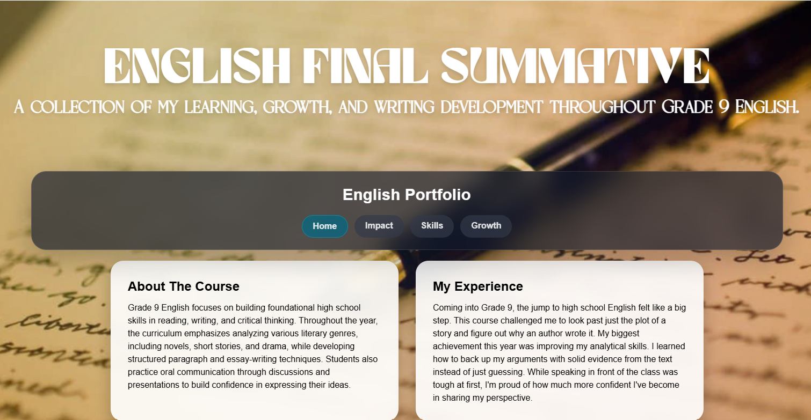

Reflecting on My Growth
True academic growth is about recognizing your own weaknesses and actively working to turn them into strengths. Throughout this course, my writing process underwent a major transformation. I shifted away from surface-level summaries and began focusing deeply on structural devices, intentional formatting, and analytical depth. By constantly reviewing my past work and implementing feedback, I developed a much cleaner, more persuasive voice. The artifacts below showcase this evolution, mapping out exactly how my technical execution and critical thinking matured over time.
Key Miletones within the Course
Moving Past Summaries and Patch-Ups
In my early diagnostic writing, my instinct was to explain what was happening in a text rather than why or how the author built that narrative scene. Transitioning to complex independent analytical assignments forced me to treat texts like technical blueprints, actively looking for overlapping stylistic frameworks.
Replacing chronological narration with clean, evidence-anchored arguments.
Iterative Editing & Design
My old system consisted of writing a single draft and performing quick spelling corrections before submission. This portfolio introduced a much steeper standard—treating writing as an interface. Managing structural assets and editing prose layout forced me to value recursive refinement.
Treating initial drafts as working clay to be sculpted over multiple passes.
The Method to My Madness
Stage 1: Separation
This meant breaking down the main prompt, pulling specific evidence from the literary passages, and planning the overall structure before drafting the final sentences.
Stage 2: Drafting
I focused on writing paragraphs with a clear analytical purpose, making sure my device examples directly supported my thesis instead of just being filler text.
Stage 3: Optimization
I focused on reviewing the text flow and fixing transitions, while also applying neat digital styling rules to ensure the final layout looked readable and professional.
Artifact Spotlight
To really show my growth, I had to focus on how everything was actually put together. By combining a clean layout with my writing, I went beyond a basic school assignment to create digital summaries that look and feel like a real web app.
Summative Portfolio ->.

Looking at the Future
The change in perspective I gained this semester goes way beyond just English portfolios. Learning how to break down big ideas, find specific variables, and build a strong argument gives me a great foundation for any future class. Whether I'm writing coding documentation, solving logic puzzles, or giving persuasive presentations, the habits I built here will help me stay organized and confident.